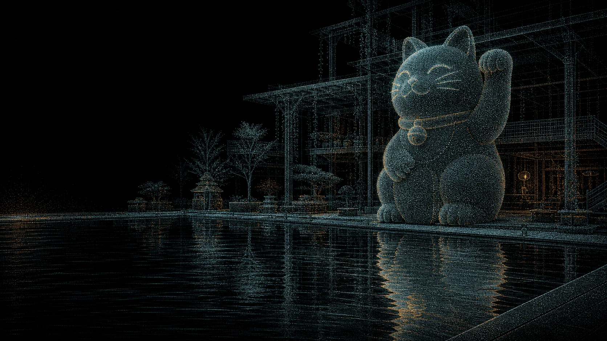
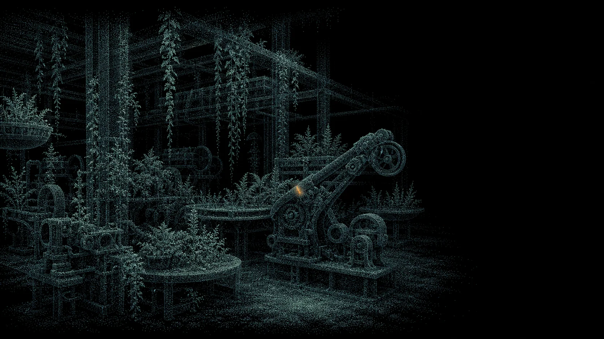
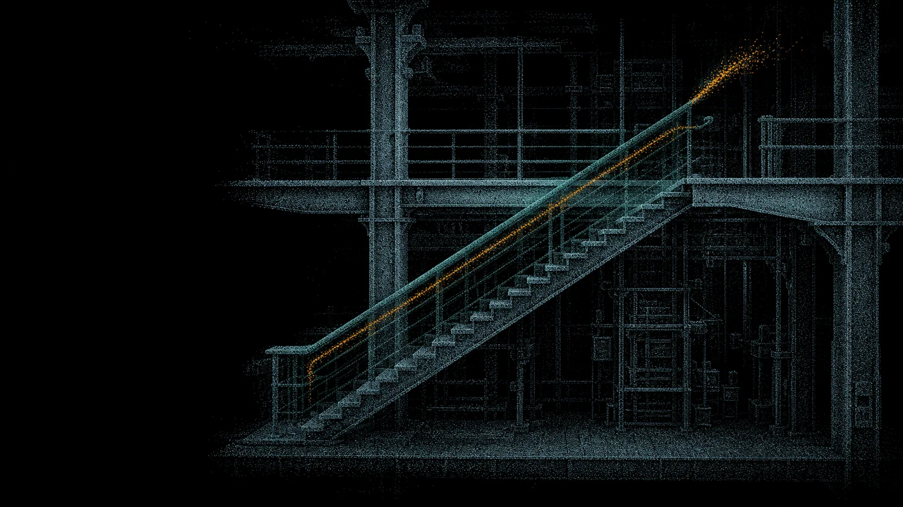
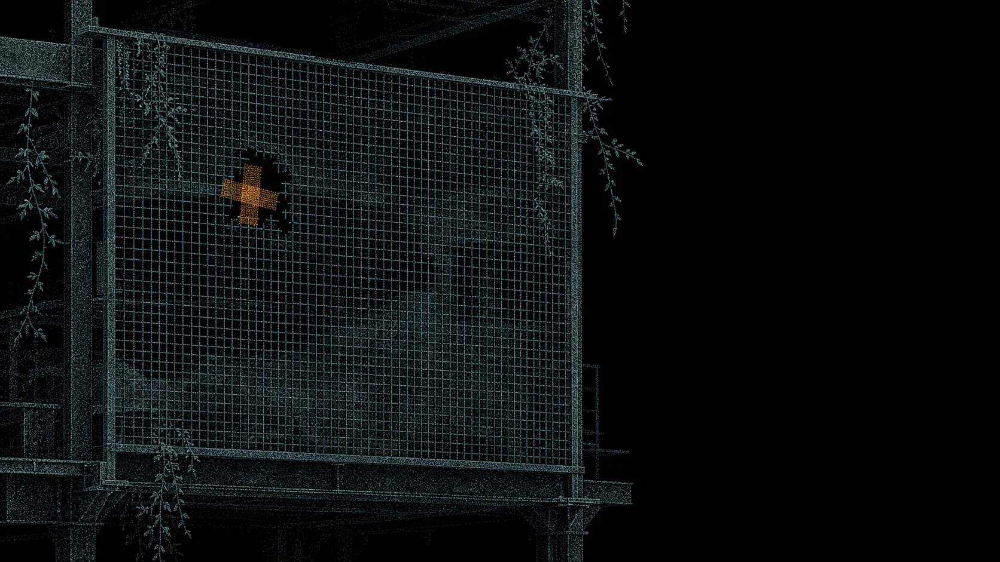
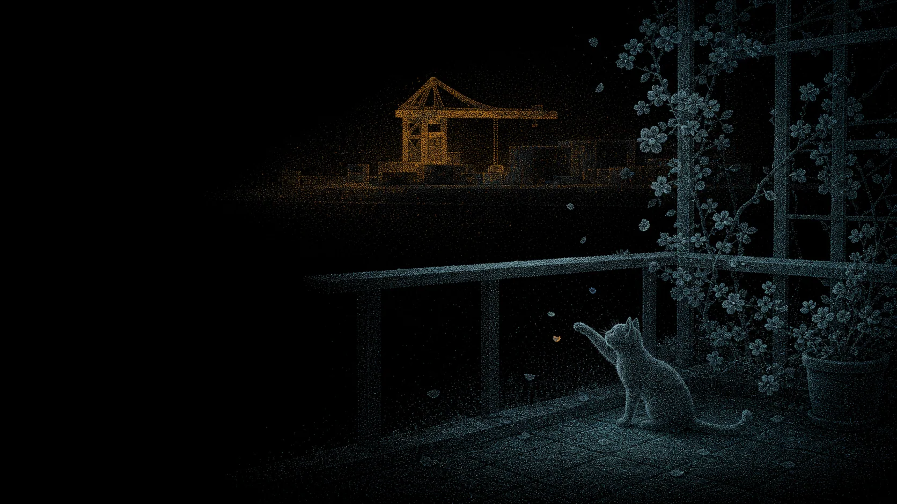

Observe
Notice recurring behaviors in everyday life.
一隻貓，充氣的
A near-future story about an industrial worker.

The workshop's PLACE framework connected physicality, locality, action, culture, and experience. I used Fuxing Island as a constant spatial anchor while allowing the story around it to shift between industrial memory and a near-future public garden.
A site visit revealed an unusual coexistence: working cranes, waterfront infrastructure, reused industrial structures, and a monumental inflatable cat. These observations became visual and narrative motifs rather than claims of documentary completeness.


Lao Yang’s character and behavior draw on my observations of people around me. I combined traits from different people, removed identifying details, and placed the fictional character within Fuxing Island’s industrial setting.
Notice recurring behaviors in everyday life.
Remove identifying details and form a composite.
Recast the composite as a retired industrial worker.
Let repair become the action that releases memory.


Some things cannot be inflated again. Some things can still be repaired.
Reflections, old metal, stair rails, and a small puncture evoke fragments of Lao Yang’s memory. His act of repair connects those fragments with the scene before him.


Visitors discover memory fragments through movement, hovering, and exploration. The particle field responds to these actions, gradually revealing scenes and narrative clues.
The trailer uses framing, editing, and sound to establish the sequence and rhythm of events, following Lao Yang’s memories and the process of repair.
The model joins the workshop's separate stories in one structure. Multiple entrances, random routing, and exits turn uncertain development into something people can watch and trace.






Interactive web
Scroll moves the particle field between Fuxing Island's industrial structures, the inflatable cat, and fragments of Lao Yang's past. Warm points respond to hovering and clicking, so visitors uncover the story by noticing links rather than following a fixed sequence.
Open interactive web
The physical model brings together stories developed by participants from different schools within the workshop group. A ball can enter at several points, follow the tracks, and emerge through different exits. The tracks distribute it among possible routes through chance. Its passage offers a spatial metaphor for a life trajectory: a starting point opens possibilities, but does not settle the destination. The branching paths make uncertainty visible and turn an abstract relationship between stories into movement through a shared structure.
In my narrative, the cat is both part of Lao Yang's everyday life and a link to another participant's independent near-future story. Lao Yang feeds the cat; it has also been cared for by Axiu, the protagonist of that other project. This shared connection places the two characters within a common world without requiring their stories to merge or inventing a direct meeting between them. Care for the same animal becomes a small but concrete thread between otherwise separate lives.
The model and the recurring narrative clues operate at different scales. The tracks express the uncertainty of individual trajectories, while the cat gives one cross-story connection a specific emotional meaning. Each participant's project remains a self-contained work, yet these connections collectively establish a broader fictional world. In this reading, the city takes shape through overlapping lives, chance encounters, and acts of care as much as through its physical setting.